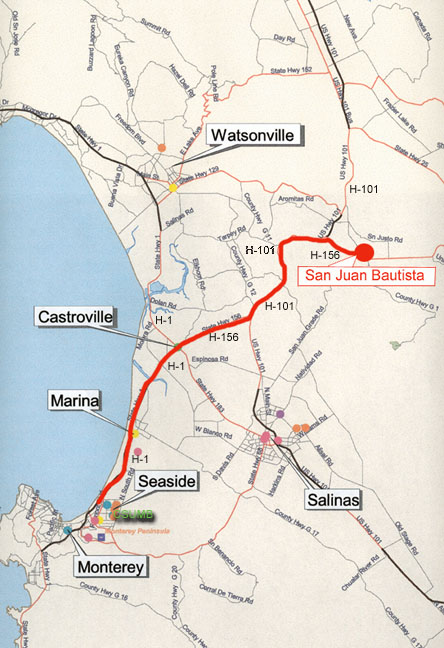

From Campus to the Mission In order to get to Old Mission San Juan Bautista from
the CSU Monterey Bay campus, this map assumes that you will be departing
from the CSU Monterey Bay/Fort Ord main gate on State Highway 1.
You should note that from the main gate the travel time is approximately
30
minutes to the main plaza fronting the Old Mission at San Juan Bautista.
Travelling north on State Highway 1 from the CSU Monterey Bay main
gate you will veer to the right (or northeast on Highway 156) where State
Highway 1 and Highway 156 diverge. You will travel northeast on
Highway 156 until you come to Highway 101, at which time you will take
Highway 101 north (northeast) until you pass the large grove of
eucalyptus trees bordering Highway 101. At that point you will note
a state historical marker bearing the name of Mission San Juan Bautista.
At the turn-off for Highway 156 (continuing east) you will head east
on Highway 156 for approximately three miles until you come
to the next historical marker for Mission San Juan Bautista (and at the
intersection with the towns only gas station, VFW Hall, and cemetery).
At that point, you will make a left turn and at the stop sign you will
turn right onto Muckelemi Road and continue till you meet the intersection
with 2nd Street. Turn right on 2nd Street and continue to
the area nearest the Old Plaza and State Park. At that point, you
should seek out available parking as you will be adjacent the Old Mission.
The Old Mission fronts the Old Plaza, and access to the courtyard is generally
through the Mission Gift Shop, or, when the Gift Shop is closed, by way
of those gates to the courtyard and excavation area. You should only
enter the Old Mission Courtyard and excavation area when Professor Mendoza
is present for the purposes of supervision and campus protocol.

Based on GIS map produced by Sandra Kaslin for Dr.
Yong Lao's SBSC 227/327 "Introduction to Geographic Information Systems"
course in the Spring of 1998.